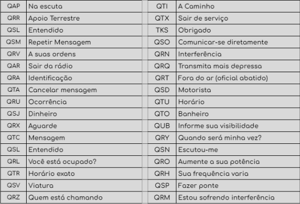
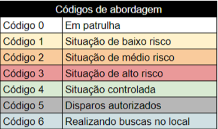
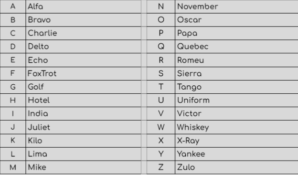
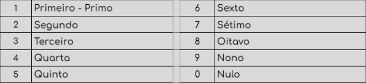
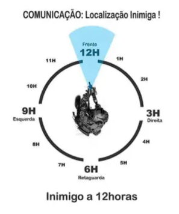
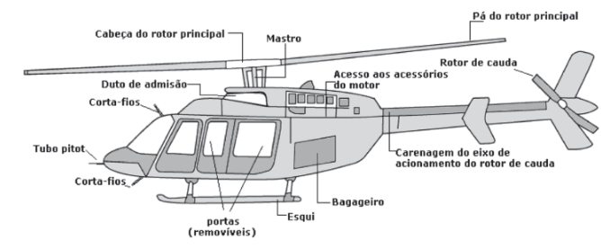
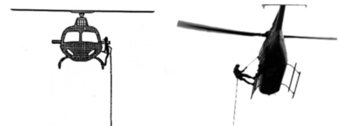
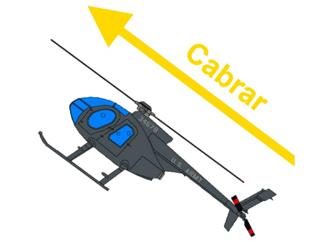

Manual de Estudos G.A.E.P
Introdução
0.1) Sobre o G.A.E.P
O GAEP tem como função dar apoio aéreo em acompanhamentos ou em ações que necessitam de apoio aéreo, o Grupamento Aéreo Especial da Polícia atua também na prevenção de crimes e combate a crimes já executados, através de patrulhas preventivas, ostensivas e investigações criminais, respectivamente. O G.A.E.P adota como lema “Voar para Servir!”, ou seja, eles estão presentes para servir e proteger a população através do ar, por este fato, os oficiais não estão acima da lei e sim agindo para que elas sejam seguidas.
0.2) Regimento Interno
- 1. Qualquer palavra dirigida a um superior deverá ser falada com Cargo/Patente ou Senhor(a).
- 2. Necessita-se respeitar a hierarquia do BPM independente da guarnição.
- 3. Ser o mais limpo possível na rádio evitando o uso de palavras de baixo calão
- 4. Proibido ficar atirando sem motivo dentro do Helicóptero. (Mais detalhado na parte de condutas)
- 5. Proibido qualquer atitude ilegal (Roubo, Furto, etc...). Passível de EXONERAÇÃO.
- 6. Má conduta é expressamente proibido tendo tolerância 0 para esses casos.
- 7. Ao chegar a um local, é de extrema importância é OBRIGATÓRIO apresentar-se para a maior patente.
Modulação
1.1) Utilização da Rádio
Todas as unidades policiais utilizam um código Q padronizado, os códigos mais utilizados em que todo soldado está habituado com o uso são:
Juntamente com os códigos Q temos os códigos de patrulha que devem ser usados para situações diárias como Abordagens, Acompanhamentos, Etc…
1.2) Padronização da Rádio
A Rádio é de uso comum de todas as Guarnições/unidades, Dessa forma toda modulação na rádio deve acontecer de forma padronizada, sendo a forma correta:
1.3) Alfabeto Fonético
O Método Fônico, também chamado de método fonético, é um método de alfabetização que prioriza o ensino dos sons dos grafemas do alfabeto, começando com as letras mais simples (vogais) e caminhando até as mais complexas (Consoantes) para, depois, utilizá-las para formas sílabas e palavras.
1.4) Número Ordinal
Números ordinais expressam ordem, são representados por um número cardinal seguido do indicador ordinal, como o 1°, 2° e assim por diante. Os números ordinais representam ordem, Os números ordinais, como o nome sugere, são os números que representam uma ordem.
Acompanhamento
2.1) Níveis de Perseguição.
Toda perseguição deve ser medida de acordo com os riscos que ela oferece para os civis e para os policiais, havendo três níveis de perseguição: Baixo, Médio e Alto.
2.1.1 - Baixo Risco (Código 1)
- Baixo Risco
- Situação de Corrida Ilegal ou Infrações de trânsito
- Prezar pelo acompanhamneo sem realização de manosbras de interceptação
- Limite de 2 viaturas (+1 com GAEP)
2.1.2 - Médio Risco (Código 2)
- Médio Risco
- Pode evoluir de uma perseguição de código 1 dependendo das ações do perseguido, como no caso o suspeito não prezar pelo acompanhamento e começar a rampar, andar na contramão, subir no passeio, entre outras situações.
- É Código 2 na situação de tráfico de drogas e/ou roubo a residência, onde há um crime envolvido
- Prezar pelo acompanhamento, embora manobras de interceptação como roadblock parcial e box podem ser aplicadas
- Limite de 2 viaturas (+1 com GAEP)
2.1.3 - Alto Risco (Código 3)
Procedimentos G.A.E.P
3.1) Localização por Relógio
Utilizando a rosa dos ventos e um relógio como exemplo de navegação sendo Norte/12 horas a parte da frente do Helicóptero e Sul/6 horas a Rabeta do Helicóptero.
3.2) Componentes do Helicóptero
O Helicóptero é composto do corpo e duas hélices: Uma hélice horizontal principal de grande porte e outra de pequeno porte vertical na cauda do aparelho. Um Turbo-motor aciona a hélice principal e a hélice de cauda
3.3) Uso do rapel
Rapel é uma técnica vertical praticada com o uso de cordas e equipamentos adequados para a descida de paredões e vãos livres bem como outras edificações. Trata-se de uma atividade criada a partir das técnicas do alpinismo, o que significa que requer preocupação com a segurança do praticante 2. O rapel é usado frequentemente para desembarque rápido que não necessita pousar o heli. Ele é bastante usado em questões para prestar apoio terrestre e salvar vidas em lugares inacessíveis.
3.4) Disparos no Helicóptero
Caso esteja prestando apoio em uma trocação de tiro e um indivíduo começa a disparar no águia, o piloto tem que tomar uma decisão para salvar sua vida e a vida dos seus colegas. Você tem que começar a andar para trás pois é uma parte blindada e não tem contato com janelas.
